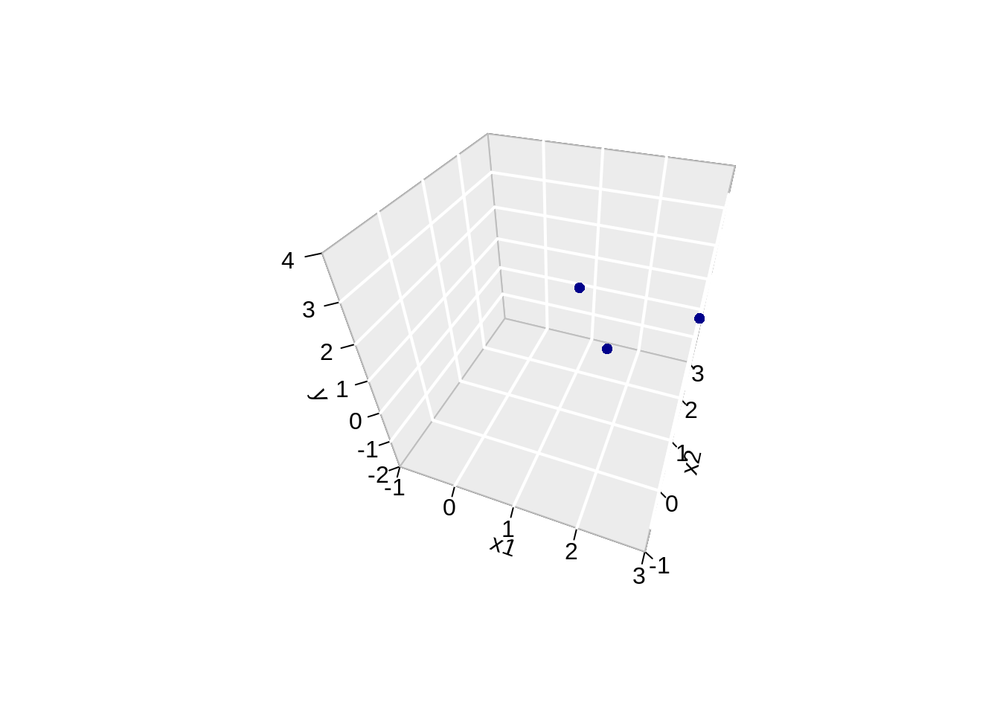
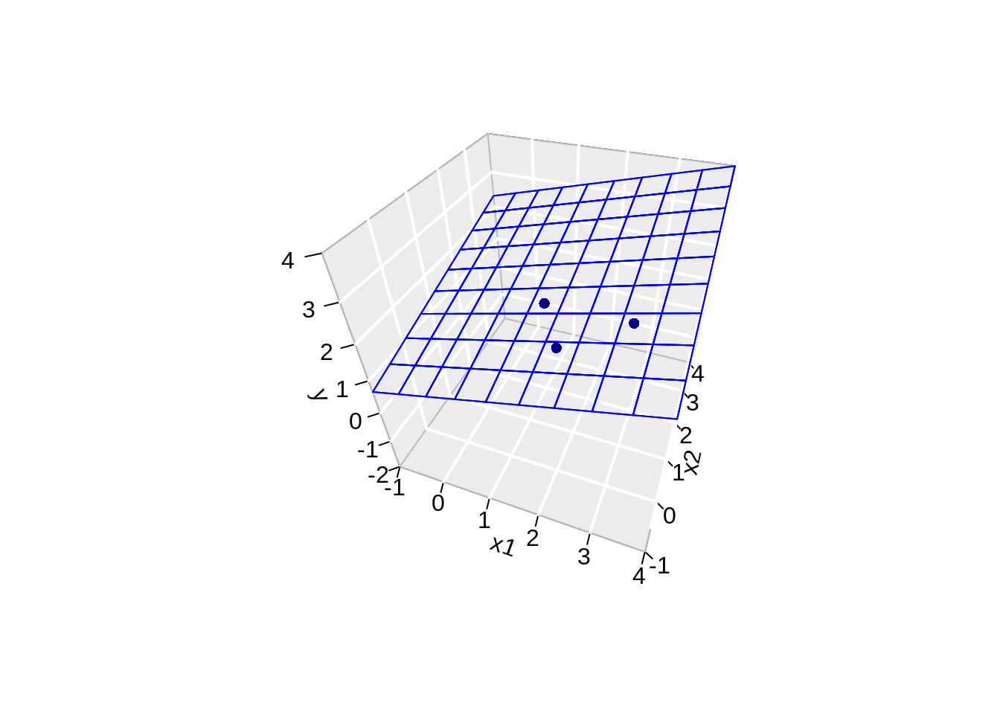

Dataset with 3 observation (X,Y):
library(tidyverse)## ── Attaching packages ─────────────────────────────────────── tidyverse 1.3.1 ──## ✔ ggplot2 3.3.5 ✔ purrr 0.3.4
## ✔ tibble 3.1.5 ✔ dplyr 1.0.7
## ✔ tidyr 1.1.4 ✔ stringr 1.4.0
## ✔ readr 2.0.1 ✔ forcats 0.5.1## ── Conflicts ────────────────────────────────────────── tidyverse_conflicts() ──
## ✖ dplyr::filter() masks stats::filter()
## ✖ dplyr::lag() masks stats::lag()data <- data.frame(x=1:3,y=c(1,2,2))
data\[ y_i=\beta_0+\beta_1x + \epsilon_i \]
If we write the model for each observation:
\[ \begin{array} {lcl} 1 &=& \beta_0+\beta_1 1 + \epsilon_1 \\ 2 &=& \beta_0+\beta_1 2 + \epsilon_2 \\ 2 &=& \beta_0+\beta_1 2 + \epsilon_3 \\ \end{array} \]
We can also write this in matrix form
\[ \mathbf{Y} = \mathbf{X}\boldsymbol{\beta}+\boldsymbol{\epsilon} \]
with
\[ \mathbf{Y}=\left[ \begin{array}{c} 1\\ 2\\ 2\\ \end{array}\right], \quad \mathbf{X}= \left[ \begin{array}{cc} 1&1\\ 1&2\\ 1&3\\ \end{array} \right], \quad \boldsymbol{\beta} = \left[ \begin{array}{c} \beta_0\\ \beta_1\\ \end{array} \right] \quad \text{and} \quad \boldsymbol{\epsilon}= \left[ \begin{array}{c} \epsilon_1\\ \epsilon_2\\ \epsilon_3 \end{array} \right] \]
lm1 <- lm(y~x,data)
data$yhat <- lm1$fitted
data %>%
ggplot(aes(x,y)) +
geom_point() +
ylim(0,4) +
xlim(0,4) +
stat_smooth(method = "lm", color = "red", fullrange = TRUE) +
geom_point(aes(x=x, y =yhat), pch = 2, size = 3, color = "red") +
geom_segment(data = data, aes(x = x, xend = x, y = y, yend = yhat), lty = 2 )## `geom_smooth()` using formula 'y ~ x'## Warning in max(ids, na.rm = TRUE): no non-missing arguments to max; returning
## -InfMinimize the residual sum of squares \[\begin{eqnarray*} RSS(\boldsymbol{\beta})&=&\sum\limits_{i=1}^n e^2_i\\ &=&\sum\limits_{i=1}^n \left(y_i-\beta_0-\sum\limits_{j=1}^p x_{ij}\beta_j\right)^2 \end{eqnarray*}\]
or in matrix notation \[\begin{eqnarray*} RSS(\boldsymbol{\beta})&=&(\mathbf{Y}-\mathbf{X\beta})^T(\mathbf{Y}-\mathbf{X\beta})\\ &=&\Vert \mathbf{Y}-\mathbf{X\beta}\Vert^2_2 \end{eqnarray*}\] with the \(L_2\)-norm of a \(p\)-dim. vector \(v\) \(\Vert \mathbf{v} \Vert_2=\sqrt{v_1^2+\ldots+v_p^2}\) \(\rightarrow\) \(\hat{\boldsymbol{\beta}}=\text{argmin}_\beta \Vert \mathbf{Y}-\mathbf{X\beta}\Vert^2\)
\[ \begin{array}{ccc} \frac{\partial RSS}{\partial \boldsymbol{\beta}}&=&\mathbf{0}\\\\ \frac{(\mathbf{Y}-\mathbf{X\beta})^T(\mathbf{Y}-\mathbf{X}\boldsymbol{\beta})}{\partial \boldsymbol{\beta}}&=&\mathbf{0}\\\\ -2\mathbf{X}^T(\mathbf{Y}-\mathbf{X}\boldsymbol{\beta})&=&\mathbf{0}\\\\ \mathbf{X}^T\mathbf{X\beta}&=&\mathbf{X}^T\mathbf{Y}\\\\ \hat{\boldsymbol{\beta}}&=&(\mathbf{X}^T\mathbf{X})^{-1}\mathbf{X}^T\mathbf{Y} \end{array} \]
\[ \hat{\boldsymbol{\beta}}=(\mathbf{X}^T\mathbf{X})^{-1}\mathbf{X}^T\mathbf{Y} \]
\[ \begin{array}{lcl} \hat{\mathbf{Y}} &=& \mathbf{X}\hat{\boldsymbol{\beta}}\\ &=& \mathbf{X} (\mathbf{X}^T\mathbf{X})^{-1}\mathbf{X}^T\mathbf{Y}\\ \end{array} \]
There is also another picture to interpret linear regression!
Linear regression can also be seen as a projection!
Fitted values:
\[ \begin{array}{lcl} \hat{\mathbf{Y}} &=& \mathbf{X}\hat{\boldsymbol{\beta}}\\ &=& \mathbf{X} (\mathbf{X}^T\mathbf{X})^{-1}\mathbf{X}^T\mathbf{Y}\\ &=& \mathbf{HY} \end{array} \] with \(\mathbf{H}\) the projection matrix also referred to as the hat matrix.
X <- model.matrix(~x,data)
X## (Intercept) x
## 1 1 1
## 2 1 2
## 3 1 3
## attr(,"assign")
## [1] 0 1XtX <- t(X)%*%X
XtX## (Intercept) x
## (Intercept) 3 6
## x 6 14XtXinv <- solve(t(X)%*%X)
XtXinv## (Intercept) x
## (Intercept) 2.333333 -1.0
## x -1.000000 0.5H <- X %*% XtXinv %*% t(X)
H## 1 2 3
## 1 0.8333333 0.3333333 -0.1666667
## 2 0.3333333 0.3333333 0.3333333
## 3 -0.1666667 0.3333333 0.8333333Y <- data$y
Yhat <- H%*%Y
Yhat## [,1]
## 1 1.166667
## 2 1.666667
## 3 2.166667The other picture to linear regression is to consider \(X_0\), \(X_1\) and \(Y\) as vectors in the space of the data \(\mathbb{R}^n\), here \(\mathbb{R}^3\) because we have three data points.
originRn <- data.frame(X1=0,X2=0,X3=0)
data$x0 <- 1
dataRn <- data.frame(t(data))
library(plotly)##
## Attaching package: 'plotly'## The following object is masked from 'package:ggplot2':
##
## last_plot## The following object is masked from 'package:stats':
##
## filter## The following object is masked from 'package:graphics':
##
## layoutp1 <- plot_ly(
originRn,
x = ~ X1,
y = ~ X2,
z= ~ X3) %>%
add_markers(type="scatter3d") %>%
layout(
scene = list(
aspectmode="cube",
xaxis = list(range=c(-4,4)), yaxis = list(range=c(-4,4)), zaxis = list(range=c(-4,4))
)
)
p1 <- p1 %>%
add_trace(
x = c(0,1),
y = c(0,0),
z = c(0,0),
mode = "lines",
line = list(width = 5, color = "grey"),
type="scatter3d") %>%
add_trace(
x = c(0,0),
y = c(0,1),
z = c(0,0),
mode = "lines",
line = list(width = 5, color = "grey"),
type="scatter3d") %>%
add_trace(
x = c(0,0),
y = c(0,0),
z = c(0,1),
mode = "lines",
line = list(width = 5, color = "grey"),
type="scatter3d") %>%
add_trace(
x = c(0,1),
y = c(0,1),
z = c(0,1),
mode = "lines",
line = list(width = 5, color = "black"),
type="scatter3d") %>%
add_trace(
x = c(0,1),
y = c(0,2),
z = c(0,3),
mode = "lines",
line = list(width = 5, color = "black"),
type="scatter3d")p2 <- p1 %>%
add_trace(
x = c(0,Y[1]),
y = c(0,Y[2]),
z = c(0,Y[3]),
mode = "lines",
line = list(width = 5, color = "red"),
type="scatter3d") %>%
add_trace(
x = c(0,Yhat[1]),
y = c(0,Yhat[2]),
z = c(0,Yhat[3]),
mode = "lines",
line = list(width = 5, color = "red"),
type="scatter3d") %>% add_trace(
x = c(Y[1],Yhat[1]),
y = c(Y[2],Yhat[2]),
z = c(Y[3],Yhat[3]),
mode = "lines",
line = list(width = 5, color = "red", dash="dash"),
type="scatter3d")
p2\[ \begin{array}{lcl} \hat{\mathbf{Y}} &=& \mathbf{X} (\mathbf{X}^T\mathbf{X})^{-1}\mathbf{X}^T\mathbf{Y}\\ &=& \mathbf{X}(\mathbf{X}^T\mathbf{X})^{-1/2}(\mathbf{X}^T\mathbf{X})^{-1/2}\mathbf{X}^T\mathbf{Y}\\ &=& \mathbf{U}\mathbf{U}^T\mathbf{Y} \end{array} \]
\(\mathbf{U}\) is a new orthonormal basis in \(\mathbb{R}^2\), a subspace of \(\mathbb{R}^3\)
The space spanned by U and X is the column space of X, e.g. it contains all possible linear combinantions of X. \(\mathbf{U}^t\mathbf{Y}\) is the projection of Y on this new orthonormal basis
eigenXtX <- eigen(XtX)
XtXinvSqrt <- eigenXtX$vectors %*%diag(1/eigenXtX$values^.5)%*%t(eigenXtX$vectors)
U <- X %*% XtXinvSqrt
p3 <- p1 %>%
add_trace(
x = c(0,U[1,1]),
y = c(0,U[2,1]),
z = c(0,U[3,1]),
mode = "lines",
line = list(width = 5, color = "blue"),
type="scatter3d") %>%
add_trace(
x = c(0,U[1,2]),
y = c(0,U[2,2]),
z = c(0,U[3,2]),
mode = "lines",
line = list(width = 5, color = "blue"),
type="scatter3d")
p3p4 <- p3 %>%
add_trace(
x = c(0,Y[1]),
y = c(0,Y[2]),
z = c(0,Y[3]),
mode = "lines",
line = list(width = 5, color = "red"),
type="scatter3d") %>%
add_trace(
x = c(0,U[1,1]*(U[,1]%*%Y)),
y = c(0,U[2,1]*(U[,1]%*%Y)),
z = c(0,U[3,1]*(U[,1]%*%Y)),
mode = "lines",
line = list(width = 5, color = "red",dash="dash"),
type="scatter3d") %>% add_trace(
x = c(Y[1],U[1,1]*(U[,1]%*%Y)),
y = c(Y[2],U[2,1]*(U[,1]%*%Y)),
z = c(Y[3],U[3,1]*(U[,1]%*%Y)),
mode = "lines",
line = list(width = 5, color = "red", dash="dash"),
type="scatter3d")
p4p5 <- p4 %>%
add_trace(
x = c(0,Y[1]),
y = c(0,Y[2]),
z = c(0,Y[3]),
mode = "lines",
line = list(width = 5, color = "red"),
type="scatter3d") %>%
add_trace(
x = c(0,U[1,2]*(U[,2]%*%Y)),
y = c(0,U[2,2]*(U[,2]%*%Y)),
z = c(0,U[3,2]*(U[,2]%*%Y)),
mode = "lines",
line = list(width = 5, color = "red",dash="dash"),
type="scatter3d") %>% add_trace(
x = c(Y[1],U[1,2]*(U[,2]%*%Y)),
y = c(Y[2],U[2,2]*(U[,2]%*%Y)),
z = c(Y[3],U[3,2]*(U[,2]%*%Y)),
mode = "lines",
line = list(width = 5, color = "red", dash="dash"),
type="scatter3d")
p5p6 <- p5 %>%
add_trace(
x = c(0,Yhat[1]),
y = c(0,Yhat[2]),
z = c(0,Yhat[3]),
mode = "lines",
line = list(width = 5, color = "red"),
type="scatter3d") %>%
add_trace(
x = c(Y[1],Yhat[1]),
y = c(Y[2],Yhat[2]),
z = c(Y[3],Yhat[3]),
mode = "lines",
line = list(width = 5, color = "red", dash="dash"),
type="scatter3d") %>%
add_trace(
x = c(U[1,1]*(U[,1]%*%Y),Yhat[1]),
y = c(U[2,1]*(U[,1]%*%Y),Yhat[2]),
z = c(U[3,1]*(U[,1]%*%Y),Yhat[3]),
mode = "lines",
line = list(width = 5, color = "red", dash="dash"),
type="scatter3d") %>%
add_trace(
x = c(U[1,2]*(U[,2]%*%Y),Yhat[1]),
y = c(U[2,2]*(U[,2]%*%Y),Yhat[2]),
z = c(U[3,2]*(U[,2]%*%Y),Yhat[3]),
mode = "lines",
line = list(width = 5, color = "red", dash="dash"),
type="scatter3d")
p6Note, that it is also clear from the equation in the derivation of the least squares solution that the residual is orthogonal on the column space:
\[ -2 \mathbf{X}^T(\mathbf{Y}-\mathbf{X}\boldsymbol{\beta}) = 0 \]
Imagine what happens when p approaches n \(p=n\) or becomes much larger than p >> n!!!
Suppose that we add a predictor \(\mathbf{X}_2 = [2,0,1]^T\)?
\[ \mathbf{Y}=\left[ \begin{array}{c} 1\\ 2\\ 2\\ \end{array}\right], \quad \mathbf{X}= \left[ \begin{array}{ccc} 1&1&2\\ 1&2&0\\ 1&3&1\\ \end{array} \right], \quad \boldsymbol{\beta} = \left[ \begin{array}{c} \beta_0\\ \beta_1\\ \beta_2 \end{array} \right] \quad \text{and} \quad \boldsymbol{\epsilon}= \left[ \begin{array}{c} \epsilon_1\\ \epsilon_2\\ \epsilon_3 \end{array} \right] \]
data$x2 <- c(2,0,1)
fit <- lm(y~x+x2,data)
# predict values on regular xy grid
x1pred <- seq(-1, 4, length.out = 10)
x2pred <- seq(-1, 4, length.out = 10)
xy <- expand.grid(x = x1pred,
x2 = x2pred)
ypred <- matrix (nrow = 30, ncol = 30,
data = predict(fit, newdata = data.frame(xy)))
library(plot3D)## Warning in fun(libname, pkgname): no display name and no $DISPLAY environment
## variable# fitted points for droplines to surface
th=20
ph=5
scatter3D(data$x,
data$x2,
Y,
pch = 16,
col="darkblue",
cex = 1,
theta = th,
ticktype = "detailed",
xlab = "x1",
ylab = "x2",
zlab = "y",
colvar=FALSE,
bty = "g",
xlim=c(-1,3),
ylim=c(-1,3),
zlim=c(-2,4))
z.pred3D <- outer(
x1pred,
x2pred,
function(x1,x2)
{
fit$coef[1] + fit$coef[2]*x1+fit$coef[2]*x2
})
x.pred3D <- outer(
x1pred,
x2pred,
function(x,y) x)
y.pred3D <- outer(
x1pred,
x2pred,
function(x,y) y)
scatter3D(data$x,
data$x2,
data$y,
pch = 16,
col="darkblue",
cex = 1,
theta = th,
ticktype = "detailed",
xlab = "x1",
ylab = "x2",
zlab = "y",
colvar=FALSE,
bty = "g",
xlim=c(-1,4),
ylim=c(-1,4),
zlim=c(-2,4))
surf3D(
x.pred3D,
y.pred3D,
z.pred3D,
col="blue",
facets=NA,
add=TRUE)
Note, that the linear regression is now a plane.
However, we obtain a perfect fit and all the data points are falling in the plane! 😱
This is obvious if we look at the column space of X!
X <- cbind(X,c(2,0,1))
XtX <- t(X)%*%X
eigenXtX <- eigen(XtX)
XtXinvSqrt <- eigenXtX$vectors %*%diag(1/eigenXtX$values^.5)%*%t(eigenXtX$vectors)
U <- X %*% XtXinvSqrt
p7 <- p1 %>%
add_trace(
x = c(0,2),
y = c(0,0),
z = c(0,1),
mode = "lines",
line = list(width = 5, color = "darkgreen"),
type="scatter3d")
p7p8 <- p7 %>%
add_trace(
x = c(0,U[1,1]),
y = c(0,U[2,1]),
z = c(0,U[3,1]),
mode = "lines",
line = list(width = 5, color = "blue"),
type="scatter3d") %>%
add_trace(
x = c(0,U[1,2]),
y = c(0,U[2,2]),
z = c(0,U[3,2]),
mode = "lines",
line = list(width = 5, color = "blue"),
type="scatter3d") %>%
add_trace(
x = c(0,U[1,3]),
y = c(0,U[2,3]),
z = c(0,U[3,3]),
mode = "lines",
line = list(width = 5, color = "blue"),
type="scatter3d")
p8The column space now spans the entire \(\mathbb{R}^3\)!
With the intercept and the two predictors we can thus fit every dataset that only has 3 observations for the predictors and the response.
So the model can no longer be used to generalise the patterns seen in the data towards the population (new observations).
Problem of overfitting!!!
If \(p >> n\) then the problem gets even worse! Then there is even no longer a unique solution to the least squares problem…